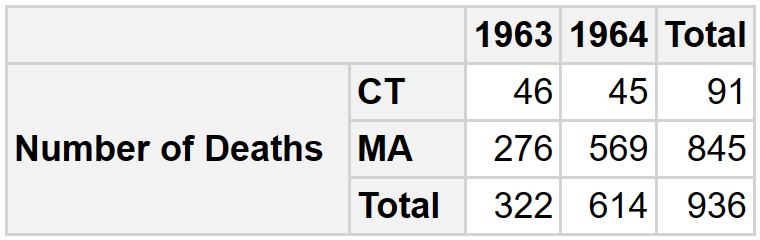
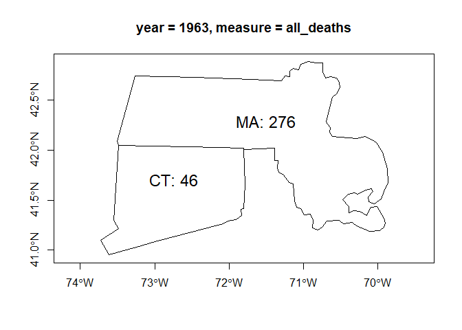
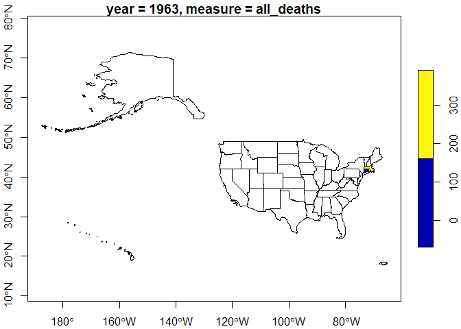

The aim of the multidimensional data model is organize data for supporting data analysis. Data in multidimensional systems is obtained from operational systems and is transformed to adapt it to the new structure.
Transformations can be carried out using professional ETL (Extract, Transform and Load) tools. Recently, tools aimed at end users have emerged, which are also aimed at performing transformation operations. All these tools are very useful to carry out the transformation process, they provide a development environment to define the transformation operations in a general way.
Frequently, the operations to be performed aim to transform a set of tables with data that comes from operational systems into a ROLAP (Relational On-Line Analytical Processing) star database, made up of fact and dimension tables, which implements a multidimensional system. With the tools mentioned above, this transformation can be carried out, but it requires a lot of work. We are not aware of any tools with operations designed to specifically support this transformation process.
The goal of rolap is to define transformations that allow us to easily obtain ROLAP star databases, composed by fact and dimension tables, from operational tables, to be able to export them in various formats to be used by OLAP query tools and also be able to exploit them from R.
The rolap package builds on experience with the starschemar package on which it is based. It incorporates the main functionalities for which starschemar was initially intended. In particular, the data model and the way of treating role-playing and role dimensions have been changed, so that it is easier to add future extensions. It has been designed in such a way that migration from starschemar is practically immediate.
Installation
You can install the released version of rolap from CRAN with:
install.packages("rolap")And the development version from GitHub with:
devtools::install_github("josesamos/rolap")Example
To illustrate how the package works we will use a small part of the Deaths in 122 U.S. cities - 1962-2016. 122 Cities Mortality Reporting System data set in the form of a flat table, available in the package in the ft_num variable, shown below.
| Year | WEEK | Week Ending Date | REGION | State | City | Pneumonia and Influenza Deaths | All Deaths | <1 year (all cause deaths) | 1-24 years (all cause deaths) | 25-44 years | 45-64 years (all cause deaths) | 65+ years (all cause deaths) |
|---|---|---|---|---|---|---|---|---|---|---|---|---|
| 1962 | 2 | 01/13/1962 | 1 | MA | Boston | 11 | 270 | 14 | 8 | 11 | 70 | 167 |
| 1962 | 4 | 01/27/1962 | 1 | MA | Boston | 12 | 285 | 22 | 7 | 8 | 73 | 175 |
| 1963 | 4 | 01/26/1963 | 1 | MA | Boston | 10 | 276 | 11 | 14 | 17 | 67 | 167 |
| 1964 | 3 | 01/18/1964 | 1 | MA | Boston | 13 | 325 | 17 | 7 | 24 | 90 | 187 |
| 1964 | 6 | 02/08/1964 | 1 | MA | Boston | 9 | 244 | 13 | 9 | 14 | 61 | 147 |
| 1962 | 3 | 01/20/1962 | 1 | CT | Bridgeport | 2 | 40 | 5 | 1 | 3 | 10 | 21 |
| 1962 | 5 | 02/03/1962 | 1 | CT | Bridgeport | 5 | 46 | 6 | 0 | 3 | 15 | 22 |
| 1962 | 8 | 02/24/1962 | 1 | CT | Bridgeport | 2 | 45 | 2 | 0 | 2 | 16 | 25 |
| 1963 | 4 | 01/26/1963 | 1 | CT | Bridgeport | 2 | 46 | 4 | 0 | 3 | 10 | 29 |
| 1964 | 5 | 02/01/1964 | 1 | CT | Bridgeport | 8 | 45 | 3 | 1 | 2 | 11 | 28 |
| 1962 | 9 | 03/03/1962 | 1 | MA | Cambridge | 4 | 39 | 1 | 0 | 2 | 7 | 29 |
| 1964 | 2 | 01/11/1964 | 1 | MA | Cambridge | 7 | 31 | 1 | 0 | 2 | 9 | 19 |
| 1964 | 5 | 02/01/1964 | 1 | MA | Cambridge | 6 | 27 | 2 | 0 | 0 | 8 | 17 |
| 1964 | 9 | 02/29/1964 | 1 | MA | Cambridge | 0 | 26 | 0 | 0 | 2 | 8 | 16 |
| 1962 | 4 | 01/27/1962 | 1 | CT | Hartford | 1 | 47 | 7 | 1 | 0 | 14 | 25 |
| 1962 | 7 | 02/17/1962 | 1 | CT | Hartford | 4 | 57 | 3 | 1 | 3 | 21 | 29 |
| 1963 | 3 | 01/19/1963 | 1 | CT | Hartford | 2 | 66 | 7 | 2 | 3 | 18 | 36 |
| 1963 | 7 | 02/16/1963 | 1 | CT | Hartford | 4 | 77 | 6 | 1 | 7 | 19 | 44 |
| 1963 | 8 | 02/23/1963 | 1 | CT | Hartford | 6 | 49 | 3 | 2 | 3 | 14 | 27 |
| 1964 | 2 | 01/11/1964 | 1 | CT | Hartford | 3 | 53 | 7 | 0 | 2 | 16 | 28 |
Star database definition
The transformation to obtain a star database from the table using rolap package is as follows:
library(rolap)
where <- dimension_schema(name = "Where",
attributes = c("REGION",
"State",
"City"))
s <- star_schema() |>
define_facts(name = "MRS Cause",
measures = c("Pneumonia and Influenza Deaths",
"All Deaths")) |>
define_dimension(name = "When",
attributes = c("Year")) |>
define_dimension(where)
db <- star_database(s, ft_num) |>
snake_case()The dimension and fact schemas can be defined as variables (where) to be reused or directly in the star schema definition. To make it easier to work in a database environment we transform the table field names to snake case.
Geographic attributes can be associated with vector layers of geographic information.
db <- db |>
define_geoattribute(
dimension = "where",
attribute = "state",
from_layer = us_layer_state,
by = "STUSPS"
)Result
To better appreciate the result, let’s export it as a tibble list. The tables of dimensions and facts of the obtained star database are shown below.
ls <- db |>
as_tibble_list()
for (i in 1:length(ls)) {
pander::pandoc.table(ls[[i]], split.table = Inf)
}| when_key | year |
|---|---|
| 1 | 1962 |
| 2 | 1963 |
| 3 | 1964 |
| where_key | region | state | city |
|---|---|---|---|
| 1 | 1 | CT | Bridgeport |
| 2 | 1 | CT | Hartford |
| 3 | 1 | MA | Boston |
| 4 | 1 | MA | Cambridge |
| when_key | where_key | pneumonia_and_influenza_deaths | all_deaths | nrow_agg |
|---|---|---|---|---|
| 1 | 1 | 9 | 131 | 3 |
| 1 | 2 | 5 | 104 | 2 |
| 1 | 3 | 23 | 555 | 2 |
| 1 | 4 | 4 | 39 | 1 |
| 2 | 1 | 2 | 46 | 1 |
| 2 | 2 | 12 | 192 | 3 |
| 2 | 3 | 10 | 276 | 1 |
| 3 | 1 | 8 | 45 | 1 |
| 3 | 2 | 3 | 53 | 1 |
| 3 | 3 | 22 | 569 | 2 |
| 3 | 4 | 13 | 84 | 3 |
The result can be exported in various formats such as csv and xslx files or to a relational database, as shown below.
con <- DBI::dbConnect(RSQLite::SQLite())
db |>
as_rdb(con)
DBI::dbListTables(con)
#> [1] "mrs_cause" "when" "where"
DBI::dbDisconnect(con)In addition to exporting it, we can formulate multidimensional queries from R. Below is an example.
sq <- star_query(db) |>
select_dimension(name = "where",
attributes = "state") |>
select_dimension(name = "when",
attributes = "year") |>
select_fact(name = "mrs_cause",
measures = "all_deaths") |>
filter_dimension(name = "when", year >= "1963") |>
filter_dimension(name = "where", city == "Bridgeport" | city == "Boston")
db_2 <- db |>
run_query(sq)The result can be displayed using the pivottabler package.
ft <- db_2 |>
as_single_tibble_list()
ft_cause <- ft[["mrs_cause"]]
pt <- pivottabler::qpvt(
ft_cause,
c("=", "state"),
c("year"),
c("Number of Deaths" = "sum(all_deaths)")
)
pt$renderPivot()
We can obtain a geographic information layer that includes it, to use it in R as an object of class sf.
gl <- db_2 |>
as_geolayer()
l1 <- gl |>
get_layer()
class(l1)
#> [1] "sf" "tbl_df" "tbl" "data.frame"
title <- gl |>
get_variable_description("var_1")
plot(sf::st_geometry(l1[, c("var_1")]), axes = TRUE, main = title)
text(
sf::st_coordinates(sf::st_centroid(sf::st_geometry(l1))),
labels = paste0(l1$state, ": ", l1$var_1),
pos = 3,
cex = 1.5
)
We can also include all geographic instances originally present in the layer.
l2 <- gl |>
get_layer(keep_all_variables_na = TRUE)
plot(sf::st_shift_longitude(l2[, "var_1"]), axes = TRUE, main = title)
Or export it in GeoPackage format.
f <- gl |>
as_GeoPackage(dir = tempdir())
sf::st_layers(f)
#> Driver: GPKG
#> Available layers:
#> layer_name geometry_type features fields crs_name
#> 1 geolayer Polygon 2 3 WGS 84
#> 2 variables NA 2 3 <NA>We can work with several star databases to form a constellation. It supports the definition of role-playing and role dimensions, as well as incremental refresh operations and automatic deployment on any RDBMS (Relational Database Management System). Examples and detailed information of these functionalities can be found in the documentation and vignettes of the package.